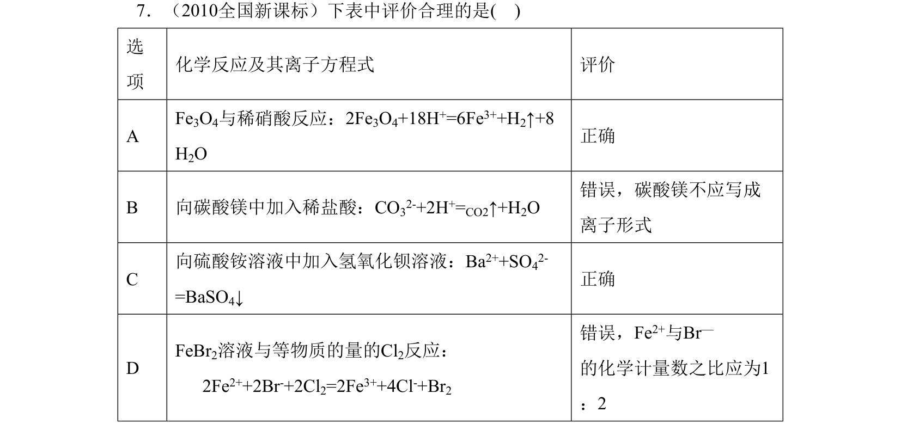
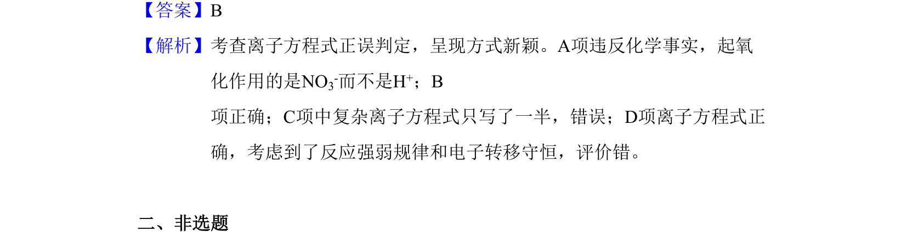

考点：离子方程式 氧化还原反应 电子转移守恒 反应规律

该题考查离子方程式正误判定，呈现形式新颖，涉及氧化还原反应分析。

📄 原 PDF 第 3 页：
素材/真题/吉林/2008-2024·（吉林）化学高考真题/2010年高考化学试卷（新课标）（解析卷）.pdf
7．（2010全国新课标）下表中评价合理的是( ) 选 项 化学反应及其离子方程式 评价 A Fe3O4与稀硝酸反应：2Fe3O4+18H+=6Fe3++H2↑+8 H2O 正确 B 向碳酸镁中加入稀盐酸：CO32-+2H+=CO2↑+H2O 错误，碳酸镁不应写成 离子形式 C 向硫酸铵溶液中加入氢氧化钡溶液：Ba2++SO42- =BaSO4↓ 正确 D FeBr2溶液与等物质的量的Cl2反应： 2Fe2++2Br-+2Cl2=2Fe3++4Cl-+Br2 错误，Fe2+与Br— 的化学计量数之比应为1 ：2
【答案】B 【解析】考查离子方程式正误判定，呈现方式新颖。A项违反化学事实，起氧 化作用的是NO3-而不是H+；B 项正确；C项中复杂离子方程式只写了一半，错误；D项离子方程式正 确，考虑到了反应强弱规律和电子转移守恒，评价错。 二、非选题